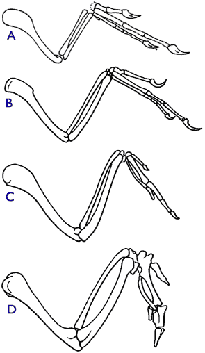

"You have loaded yourself with an unnecessary difficulty in adopting Natura non facit saltum so unreservedly."
– T. H. Huxley,
to Darwin (Huxley 1900, 2:27)
The principle of evolutionary opportunism is closely related to evolutionary history and to the effects of contingency (some authors refer to the concept of opportunism as "the principle of continuity") (Crick 1968). Descent with gradual modification means that new organisms can only use and modify what they initially are given; they are slaves to their history. New structures and functions must be recruited from previous, older structures (Futuyma 1998, pp. 110, 671-674). This is because structures, as opposed to functions, are strictly inherited. True unprecedented structural novelty should be very rare. This provides extreme constraints on the possible paths of evolution, as Huxley well noted in the quote above.
Part 3 Outline
Prediction 3.1: Anatomical parahomology
"Let the waters", it is said, "bring forth abundantly moving creature that hath life and fowl that may fly above the earth in the open firmament of heaven." Why do the waters give birth also to birds? Because there is, so to say, a family link between the creatures that fly and those that swim. In the same way that fish cut the waters, using their fins to carry them forward and their tails to direct their movements round and round and straightforward, so we see birds float in the air by the help of their wings. Both endowed with the property of swimming, their common derivation from the waters has made them of one family.
– St. Basil, Bishop of Caesarea, 329-379 A.D.
from The Hexaemeron: Homily VIII.- The Creation of Fowl and Water Animals.
making one of the earliest known inferences to common descent from biostructural similarity.
One major consequence of the constraint of gradualism is the predicted existence of parahomology. Parahomology, as the term is used here, is similarity of structure despite difference in function. When one species branches into two species, one or both of the species may acquire new functions. Since the new species must recruit and modify preexisting structures to perform these new functions, the same structure shared by these two species will now perform a different function in each of the two species. This is parahomology. It follows that parahomologous structures have a history that should be explicable from other lines of evolutionary evidence, since derived characteristics (which is what these new functions and structures now are) have evolved from more primitive (i.e. older) structures. Consequently, detailed and explicit predictions can be made about the possible morphologies of fossil intermediates.
|
 Figure 3.1.1. Comparison of the forelimbs of various relatives of modern birds. Forelimbs of (A) Ornitholestes, a theropod dinosaur, (B) Archaeopteryx, (C) Sinornis, an archaic bird from the lower Cretaceous, and (D) the wing of a modern chicken (modified from Carroll 1988, p. 340; Carroll 1997, p. 309). |
Confirmation:
There are countless examples of parahomology in living and extinct species – the same bones in the same relative positions are used in primate hands, bat wings, bird wings, pterosaur wings, whale and penguin flippers, horse legs, the digging forelimbs of moles, and webbed amphibian legs. All of these characters have similar structures that perform various different functions. The standard phylogenetic tree shows why these species have these same structures, i.e. they have common ancestors that had these structures. This is the conclusion supported by the phylogenetic tree, even though these parahomologous characters were not used to group these species together. Viewed objectively, this is truly a remarkable result, since only shared derived characters, which have the same structure and function, determine which species are grouped together in a phylogeny (refer to the explanation of cladistic methodology for more discussion).
Additionally, independent evidence from the fossil record has confirmed that many of those structures were derived from others. The fossil record shows a general chronological progression of intermediate forms between theropod dinosaurs and modern birds, in which theropod structures were modified into modern bird structures (Carroll 1988; Carroll 1997; Sereno 1999). This series is exemplified by Eoraptor (~230 Mya), the Herrerasauridae (~230-210 Mya), the Ceratosauria (~220-65 Mya), the Allosauroidea (180-90 Mya), the Deinonychosauria (150-65 Mya), Archaeopteryx (~150 Mya), the Confuciusornithidae (145 Mya), the Enantiornithes (145 Mya-65 Mya), and the Euornithes (65 Mya-recent) (Sereno 1999). Figure 3.1.1 shows the forelimbs of four representative intermediates of the avian lineage (Carroll 1988, p. 340; Carroll 1997, p. 309).
Potential Falsification:
The fossil record could show a chronological progression in which bird wings are gradually transformed into reptilian arms; however, the opposite is the case. Additionally, a strong falsification would be if it were positively demonstrated that the primitive structures of an organism's predicted ancestors could not be reasonably modified into the modern organism's derived structures. A clear fanciful example, though completely serious, is the macroevolutionary impossibility of ever finding an animal such as a Pegasus. Since a Pegasus would be a mammal closely related to the horse, its wings would be considered derived characters. However, Pegasus wings cannot be modifications of its ancestors' structures, since the immediate predicted ancestors of Pegasi and horses had no possible structures there to modify (Futuyma 1998, p. 110).
Analogously, we predict that we should never find birds with both wings and arms, or mollusks harboring chloroplasts, even though these structures could be quite useful for these organisms. Equivalently, it would be a strong falsification if the phylogenetic tree had no structural continuity, but rather had functional continuity or had no recognizable continuity of any kind. Also see the falsification for prediction 3.4.
Prediction 3.2: Molecular parahomology
The concept of parahomology applies equally to both the macroscopic structures of organisms and structures on the molecular level.
Confirmation:
On the molecular level, the existence of parahomology is quite impressive. Many proteins of very different function have strikingly similar amino acid sequences and three-dimensional structures. A frequently cited example is lysozyme and α-lactalbumin. Almost all animals have lysozyme. It is a secreted protein used to degrade bacterial cell walls as a means of defense (Voet and Voet 1995, p. 381). α-Lactalbumin is very similar structurally to lysozyme, even though its function is very different (it is involved in mammalian lactose synthesis in the mammary gland) (Acharya et al. 1989; Voet and Voet 1995, p. 608). It can often be inferred from molecular phylogenies, as it has been here, that the protein with the more basic function (e.g. lysozyme) is also the older protein (Prager and Wilson 1988; Qasba and Kumar 1997).
On a grander scale, a stunning confirmation of these evolutionary predictions has come from an analysis of Saccharomyces cerevisiae (baker's yeast) and Caenorhabditis elegans (a worm). The genomes of both these organisms were sequenced very recently (Barrell 1996; Caenorhabditis elegans Sequencing Consortium 1998). The genes used by the yeast, a unicellular organism, are mostly genes dealing directly with core biochemical functions that all organisms must perform. From an evolutionary perspective, we would expect these genes to be ancient. Thus it was expected and shown that the worm contains a great majority of these genes. In contrast, the extra genes used by the worm, which deal with multicellularity, should be more recently evolved. Phylogenetic analysis has shown that this is exactly the case. The vast majority of extra genes in the worm appear to be directly derived from genes providing core cellular functions, in accordance with evolutionary prediction (Chervitz et al. 1998).
An even larger study of the known eukaryotic genomes has further demonstrated that parahomology is rampant in nature, and that true structural innovation is relatively rare (Rubin et al. 2000). In a special issue of the leading scientific journal Science, over fifty researchers reviewed the content of the entire sequenced genomes of Drosophila melanogaster, Caenorhabditis elegans, Saccharomyces cerevisiae, and humans (an insect, a worm, a unicellular fungus, and a mammal respectively — a very wide range of disparate taxa). There are around 18,000 identifiable genes in Caenorhabditis elegans (an important model laboratory organism), of which half are duplications of other genes in the same genome. Similarly, forty percent of the insect's genome are redundant genes. From sequence comparisons, on average 70% of any organism's genes are shared with the other organisms — indicating that most genes have been reused throughout evolution for different functions in these different organisms. This figure is certainly an underestimate, since very many proteins are known that have the same three-dimensional structure, yet this similarity is undectable from sequence comparisons alone (an expected consequence of the massive structural and functional redundancy of proteins and nucleic acids, discussed more thoroughly in predictions 4.1 and 4.2). Strikingly, some fruit flies which are nearly morphologically indistinguishable (such as Drosophila melanogaster and Drosophila virilis) also have an apparent genomic similarity of only 70% (Schmid and Tautz 1997). In the final analysis, there has been very little true structural or genomic innovation during the evolution of eukaryotes, as most genes have simply been duplicated and/or reused, with minor modification, either in the same organism or in different organisms. Furthermore, the level of dissimilarity between organisms (~30%, likely reflecting the amount of genetic evolution that separates them) is apparently accountable by gradual microevolutionary processes like those that led to the divergence of various species of fruitflies.
Potential Falsification:
Proteins performing more recently evolved functions should have statistically significant similarities with proteins performing core functions. It is evolutionarily problematic if they do not. Furthermore, it would be inconsistent with evolutionary theory if we had found that genes involved in multicellular functions were more deeply rooted in their phylogenies (i.e. if these genes were more ancient than the core function genes) (Li 1997; Chervitz et al. 1998).
Prediction 3.3: Anatomical analogy
A corollary of the principle of evolutionary opportunism is analogy. Analogy is the case where different structures perform the same or similar functions in different species. Two distinct species have different histories and different structures; if both species evolve the same new function, they may recruit different structures to perform this new function. Analogy also must conform to the principle of structural continuity; analogy must be explained in terms of the structures of predicted ancestors.
Confirmation:
There are many anatomical examples of functional analogy. One case is the vertebrate eye and the cephalopod eye. Another, mentioned earlier, is the case of American and Saharan desert plants, which use different structures for the same functions needed to live in dry, arid regions. Certain mammals (whales, manatees, dolphins), birds (penguins), and fish all have the ability to live and swim in aquatic environments, and they obviously use different structures overall for these aquatic functions. Although now modified, all of the structures that perform these functions were also present in their predicted ancestors.
Potential Falsification:
We would not expect newly discovered species of dolphins, whales, penguins, or any close mammalian relatives to have gills (a possible analogy with fish), since their immediate ancestors lacked gills or gill-like structures from which they could be derived. This is the macroevolutionary prediction, in spite of the fact that gills would be extremely advantageous for aquatic mammals and birds. Also see the falsification below for molecular analogy, point 14.
Prediction 3.4: Molecular analogy
Like parahomology, analogy should be represented on both macroscopic and molecular levels.
Confirmation:
A familiar molecular example is the case of the three proteases subtilisin, carboxy peptidase II, and chymotrypsin. These three proteins are all serine proteases (i.e. they degrade other proteins in digestion). They have the same function, the same catalytic residues in their active sites, and they have the same catalytic mechanism. Yet they have no sequence or structural similarity (Voet and Voet 1995, p. 394).
Another molecular example is that of DNA polymerases. DNA polymerases are the proteins that catalyze the duplication of a strand of DNA; i.e. they catalyze multiple additions of nucleotides to a DNA strand. All the structures determined for DNA polymerases have clear structural similarity except for one, rat polymerase β (Davies et al. 1994; Voet and Voet 1995, p. 1040). Except for rat polymerase β, all the DNA polymerases are most likely related by divergent evolution. Rat polymerase β has structural similarity with nucleotidyl transferases, which catalyze the addition of one nucleotide to a DNA strand. Rat polymerase β has obviously evolved from nucleotidyl transferases by mutating to catalyze several nucleotide additions instead of just one (which nicely illustrates why analogy is ultimately also parahomology) (Aravind and Koonin 1999).
Potential Falsification:
Parahomology and analogy are specific predictions of macroevolution and the principle of evolutionary opportunism. It is possible that a world could exist where there were no cases of biological parahomology or analogy. For example, living organisms could be constructed in a modular manner, like most anthropogenic creations, where each specific structure performs one specific function.
Prediction 3.5: Anatomical suboptimality
Evolutionary opportunism also results in suboptimal functions and structures. As stated before, in gradually evolving a new function, organisms must make do with what they already have. Thus, functions are likely to be performed by structures that would have been arranged differently (e.g. more efficiently) if the final function were known from the outset. "Suboptimality" does not mean that a structure functions poorly. It simply means that a structure with a more efficient design (usually with less superfluous complexity), could perform the same final function equally well. Suboptimal structures and functions should have a gradualistic, historical evolutionary explanation, based on the opportunistic recruitment of ancestral structures, if this history is known from other evidence (e.g. if this history is phylogenetically determined by closely related organisms or fossil history).
Suboptimality and Irreducible ComplexityThe appearance of suboptimal function is intimately related to the inference of Intelligent Design. Obviously, there are many inefficient ways to perform any given function; however, some functions are performed very efficiently. Those structures that perform extremely efficient functions are often intelligently designed. Similarly, we often think of the best designer as the one who designs a structure to perform a function the most elegantly, the most efficiently, and with the least needless complexity. In the terms of the Intelligent Design advocate Michael Behe, one measure of efficiency of design (whether real or apparent) is irreducible complexity. Here are Behe’s own words – "By irreducibly complex (IC) I mean a single system composed of several well-matched, interacting parts that contribute to the basic function, wherein the removal of any one of the parts causes the system to effectively cease functioning." (Behe 1996, p. 39, emphasis in the original, my parentheses). An equivalent way of stating the evolutionary prediction of suboptimal function is that many biological systems should not be irreducibly complex. Furthermore, in most biological cases an irreducibly complex system will not be the simplest irreducibly complex system that could perform the same function. For instance, the same function may be performed by two systems of unequal complexity in two different organisms. Comparative molecular biology has demonstrated that many non-redundant genetic systems (i.e. IC systems) in one given species indeed are performed by more simple systems in other organisms. Furthermore, in innumerable cases many, if not most, biological systems are in fact genetically redundant (i.e. they are not IC). Note: The above point is not a refutation of Behe’s central argument that very complex IC systems are difficult to evolve gradually (Behe 1996, p. 40). Nevertheless, Behe’s thesis is not a rigorous scientific hypothesis, because it is very difficult, if not impossible, to marshal positive supporting evidence. One can positively establish that a system is not IC by removing a part and maintaining function. One can positively establish that a given system is not the simplest IC system by observing a functionally equivalent system with fewer parts in another organism. However, one cannot demonstrate that it is impossible to gradually evolve a certain IC system. This problem is especially grave since Behe readily admits that IC systems can evolve gradually (e.g. hemoglobin) (Behe 1996, pp. 40, 206-207). In fact, given enough iterations of evolutionary selection, there is theoretically a functional gradual path to any IC structure (Behe 1996, p. 40; Thornhill and Ussery 2000). Behe’s thesis thus boils down to a question of time, not of possibility. Despite this fact, Behe never considers evolutionary time constraints or rates of gradual evolution. For a consideration of the time necessary for observed evolutionary changes, see prediction 5.7 and prediction 5.8. |
Confirmation:
The mammalian gastrointestinal tract crosses the respiratory system. Functionally, this is suboptimal; it would be beneficial if we could breathe and swallow simultaneously. Unfortunately, we cannot, and this is why we are susceptible to death by choking. However, there is a good historical evolutionary reason for this arrangement. The Osteolepiformes (Devonian lungfish), from which mammals evolved, swallowed air to breathe. Only later did the ancestors of mammals recruit the olfactory nares of fish for the function of breathing on land. It so happens that the nares (originally used only for smelling) are on the opposite side of the esophagus from the lungs (Futuyma 1998, p. 5). Humans have inherited this original design, even though it now causes problems.
Another anatomical example of suboptimality is the inverted mammalian retina, with its blind spot. It is inverted because the retinal blood vessels and nerves are situated on top of the retina, and light must travel through them first before hitting the light sensitive cells below. The blind spot is caused by the hole where the nerves all meet and pierce through the retina to travel to the brain. In order to deal with the many problems inherent in an inverted retina, the vertebrate eye utilizes various complex compensatory structures and mechanisms (e.g. foveas and slower, more transparent unmyelinated nerves).
Cephalopods (e.g. squids and octopi) have eyes with a similar form based on the same mechanistic principles as mammalian eyes. However, in contrast with mammalian eyes, cephalopod eyes have very different underlying retinal structures (e.g. they are verted, not inverted), and they have no blind spots (Goldsmith 1990; Williams 1992, pp. 72-74). This strongly suggests that mammals also could have eyes without blind spots.
There are many other examples of suboptimal function in the Jury-rigged Design FAQ.
Potential Falsification:
A strong positive falsification would be the discovery of a mammal without crossed gastrointestinal and respiratory tracts, or a reptile or mammal without blindspots in its eyes, etc. This is because poor design cannot be "fixed" by evolutionary processes, even if correcting the problem would be beneficial for the organism. The only "fixing" that is allowed evolutionarily is relatively minor modification of what already exists.
Note: Members of this class of argument could conceivably be nullified if a presumed suboptimal structure were in fact found to be functionally efficient. However, for most examples, finding an important function for the specific structural arrangement does not alter the basic conclusion. For example, perhaps the retinal blind spot in vertebrates is actually necessary for an important function, or perhaps it has a presently unknown function specific to land animals. In fact, some anti-evolutionists have proposed that the complex inverted vertebrate eye, with its blind spot, is required for terrestrial life, while the more efficient cephalopod verted eye is sufficient for murky underwater vision (Bergman 2000). But then the question arises—why do vertebrate fish have inverted eyes? For fish, the vertebrate eye plan with its additional needless complexity is suboptimal, since the more elegant, more efficient, less complex cephalopod eye could perform underwater functions equally as well. The suboptimality argument has not been refuted; the emphasis has merely been shifted from one organism to another. Moreover, the macroevolutionary hypothesis would still be potentially falsified by the discovery of vertebrate bony fish with verted eyes. For more information see the "Suboptimality and Irreducible Complexity" box.
Prediction 3.6: Molecular suboptimality
The principle of imperfect design should apply to biomolecular organization as well.
Confirmation:
With the recent sequencing of the human genome, we have found that less than 2% of the DNA in the human genome is used for making proteins (International Human Genome Sequencing Consortium 2001, p. 900). A full 45% of our genome is composed of transposons, which serve no known function for the individual (except to cause a significant fraction of genetic illnesses and cancers) (Deininger and Batzer 1999; Ostertag and Kazazian 2001). One retrotransposon, LINE1, constitutes a full 17% of the human genome (Ostertag and Kazazian 2001; Smit 1996, IHGSC 2001, p. 879-882). All specific individual Alu transposons tested so far have been shown to be nonfunctional (Deininger and Batzer 1999). Thus, even if these genetic elements in fact provide a bona fide function as a whole, they would remain some of the most inefficient genes known in all of biology due to thier excessive number and their known propensity to cause illnesses.
Approximately 20% of the human genome is composed of pseudogenes, the majority of which serve no function for the individual. A remarkable example is the glyceraldehyde-3-phosphate dehydrogenase (GDPH) gene. In humans, there is one functional GDPH gene, but there are at least twenty GDPH pseudogenes. In mice, there are approximately 200 GDPH pseudogenes. In addition to one or two functional copies, there are between 20 and 30 pseudogenes of cytochrome c in both humans and the rat (Li 1997, p. 349).
The majority of eukaryotic genes coding for functional proteins are interrupted by noncoding sequences called introns. Introns must be cut out before the information contained in the gene can be used to make protein. Introns make up 80% of the average vertebrate gene (Voet and Voet 1995, p. 1144). Similar to transposons, most introns serve no purpose (in rare cases they are involved in gene regulation or code for a functional RNA).
The rest of the DNA in a eukaryotic genome is mostly short repetitive sequences such as AAAAAA, CACACA, or CGGCGGCGG (IHGSC 2001, p. 879). It appears that there is no efficient mechanism for ridding most metazoan (animal) genomes of extraneous DNA; once extra DNA is introduced into the genome of an animal, it is there to stay.
Even protists, unicellular organisms, are subject to such evolutionary jury-rigging. Two ciliates, Paramecium aurelia and Paramecium caudatum, are virtually indistinguishable from morphological and phenotypic analysis (see Figure 3.6.1). However, the first has less than 200,000 kb of DNA in its genome, whereas the genome of the second has nearly 9,000,000 kb of DNA, which is evidently at least 45 times the amount it actually needs (Li 1997, p. 383). Note also that Paramecium caudatum, a single-celled organism, has about three times the DNA as a human.
A lot of energy is expended in dealing with this excess DNA; however, all these molecular examples also have convincing explanations based on evolutionary histories. See the molecular evidence in predictions 4.3-4.5 for more information (Li 1997).
Potential Falsification:
Because evolution has no foresight, and cannot plan for future functions, it would be extremely suspicious if biological molecular systems were efficiently designed. Again, this does not rule out complexity — merely efficiency of mechanism.
References
Acharya, K. R., D. I. Stuart, et al. (1989) "Refined structure of baboon alpha-lactalbumin at 1.7 Å resolution - comparison with c-type lysozyme." Journal of Molecular Biology 208: 99-127. [PubMed]
Aravind, L., and Koonin, E. V. (1999) "DNA polymerase beta-like nucleotidyl transferase superfamily: identification of three new families, classification, and evolutionary history." Nucleic Acids Research 27: 1609. http://nar.oupjournals.org/cgi/content/full/27/7/1609
Barrell, B. G., et al. (1996) "Life with 6000 genes." Science 274: 546-567. [PubMed]
Behe, M. (1996) Darwin's Black Box. New York, Touchstone.
Bergman, J. (2000) "Is the inverted human eye a poor design?" Perspectives on Science and Christian Faith 52: 18-30. http://www.asa3.org/ASA/PSCF/2000/PSCF3-00Bergman.html
Carroll, R. L. (1988) Vertebrate Paleontology and Evolution. New York, W. H. Freeman and Co.
Carroll, R. L. (1997) Patterns and Processes of Vertebrate Evolution. Cambridge: Cambridge University Press.
Chervitz, S. A., et al. (1998) "Comparison of the complete protein sets of worm and yeast: Orthology and divergence." Science 282: 2022-2028. [PubMed]
Caenorhabditis elegans Sequencing Consortium (1998) "Genome sequence of the nematode C. elegans: A platform for investigating biology." Science 282: 2012-2018. [PubMed]
Crick, F. H. C. (1968) "The origin of the genetic code." Journal of Molecular Biology 38: 367-379.
Davies, J. C. I., R. J. Almassey, et al. (1994) "2.3 Å crystal structure of the catalytic domain of DNA polymerase beta." Cell 76: 1123-1133. [PubMed]
Deininger, P. L., and Batzer, M. A. (1999) "Alu repeats and human disease." Mol Genet Metab. 67: 183-193. [PubMed]
Futuyma, D. (1998) Evolutionary Biology. Third edition. Sunderland, MA, Sinauer Associates.
Goldsmith, T. H. (1990) "Optimization, constraint, and history in the evolution of eyes." Quarterly Review of Biology 65: 281-322. [PubMed]
Huxley, T. H. (1900) Life and letters of Thomas Henry Huxley. London, MacMillan.
International Human Genome Sequencing Consortium (2001) "Initial sequencing and analysis of the human genome." Nature 409: 860-921. http://www.nature.com/cgi-taf/DynaPage.taf?file=/nature/journal/v409/n6822/full/409860a0_fs.html
Li, W.-H. (1997) Molecular Evolution. Sunderland, MA, Sinauer Associates.
Ostertag, E.M., and Kazazian, H. H. (2001) "Biology of mammalian L1 retrotransposons." Annu Rev Genet 35: 501-538. [PubMed]
Novick, G. E., Gonzalez, T., Garrison, J., Novick, C. C., Batzer, M. A., Deininger, P. L., Herrera, R. J. (1993) "The use of polymorphic Alu insertions in human DNA fingerprinting." EXS. 67: 283-291. [PubMed]
Novick, G. E., Novick, C. C., Yunis, J., Yunis, E., Martinez, K., Duncan, G. G., Troup, G. M., Deininger, P. L., Stoneking, M., Batzer, M. A., et al. (1995) "Polymorphic human specific Alu insertions as markers for human identification." Electrophoresis 16: 1596-1601. [PubMed]
Prager, E. M., and Wilson, A. C. (1988) "Ancient origin of lactalbumin from lysozyme: analysis of DNA and amino acid sequences." Journal of Molecular Evolution 27: 326-335. [PubMed]
Qasba, P. K., and Kumar, S. (1997) "Molecular divergence of lysozymes and alpha lactalbumin." Critical Review of Biochemistry and Molecular Biology 32: 255-306. [PubMed]
Rubin, G. M. et al. (2000) "Comparative Genomics of the Eukaryotes." Science 287: 2204-2218. [PubMed]
Schmid, K. J., and Tautz, D. (1997) "A screen for fast evolving genes from Drosophila." Proc. Natl. Acad. Sci. USA. 94: 9746-9750. http://www.pnas.org/cgi/content/full/94/18/9746
Sereno, P. C. (1999) "The Evolution of Dinosaurs." Science 284: 2137-2147. [PubMed]
Smit, A. F. A. (1996) "The origin of interspersed repeats in the human genome." Current Opinion in Genetics and Development 6: 743-748. [PubMed]
Thornhill, R. H., and Ussery, D. W. (2000) "A classification of possible routes of Darwinian evolution." Journal of Theoretical Biology 203: 111-116. [PubMed]
Voet, D., and Voet, J. (1995) Biochemistry. New York, John Wiley and Sons.
Williams, G. C. (1992) Natural Selection: Domains, Levels, and Challenges. New York, Oxford University Press.